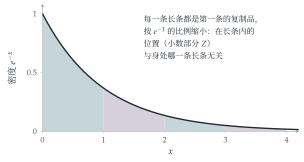

STEP III 2021，第 11 题
继续之前，请先阅读题目（原题为英文）。题目载于 OCR 提供下载的 2021 年 STEP 试卷（zip 文件）内的 STEP III 试卷： www.ocr.org.uk/Images/696588-2021-past-papers.zip
引子
一颗放射性原子在实验室里待了一百万年，一直没有衰变。它是否“快要”衰变了？不是：它在下一秒内衰变的机会，与一颗刚刚产生的原子完全相同。放射性原子不会老化。直至衰变为止的等候时间服从指数分布（exponential distribution），而这个分布的决定性特征，就是它没有记忆。
这道题以一种令人印象深刻的形式展示了这种无记忆性（memorylessness）。把一个指数等候时间拆成整数个单位和小数部分。原来这两部分是独立（independent）的：知道你等了多少个完整的小时，对于分钟数毫无提示。这道题还会在练习中解释，为甚么你等巴士的时间，可以显得比两班巴士之间的间隔还要长。
动笔之前
对于 \(x \geq 0\)，\(\mathrm{P}(X > x)\) 是甚么？\(\mathrm{P}(X > s + t \mid X > s)\) 又是甚么？
\(\mathrm{P}(X > x) = \int_x^\infty\lambda e^{-\lambda u}\,\mathrm{d}u = e^{-\lambda x}\)。于是 \(\mathrm{P}(X > s + t \mid X > s) = \frac{e^{-\lambda(s + t)}}{e^{-\lambda s}} = e^{-\lambda t} = \mathrm{P}(X > t)\)：已经等了 \(s\) 之后，余下的等候时间与从头开始等候的分布相同。这就是无记忆性质（memoryless property）。
逐步解题
阶段 1 整数部分
\(Y = n\) 当且仅当 \(n \leq X < n + 1\)： \[\mathrm{P}(Y = n) = e^{-\lambda n} - e^{-\lambda(n + 1)} = (1 - e^{-\lambda})e^{-n\lambda}. \qed\] 所以 \(Y\) 服从几何分布（geometric distribution）：每一个完整单位都以概率 \(e^{-\lambda}\) 被“挨过”。
阶段 2 小数部分
\(Z < z\) 表示 \(X\) 落在其中一个区间 \([n, n + z)\) 内。把这些区间的概率加起来。
\[\mathrm{P}(Z < z) = \sum_{n \geq 0}\bigl(e^{-\lambda n} - e^{-\lambda(n + z)}\bigr) = (1 - e^{-\lambda z})\sum_{n \geq 0}e^{-\lambda n} = \frac{1 - e^{-\lambda z}}{1 - e^{-\lambda}}. \qed\]
阶段 3 \(Z\) 的平均值
对于取值于 \([0, 1]\) 的随机变量（random variable），\(\mathrm{E}(Z) = \int_0^1\mathrm{P}(Z > z)\,\mathrm{d}z\)。运用这条公式。
设 \(c = 1 - e^{-\lambda}\)，则 \(\mathrm{P}(Z > z) = 1 - \frac{1 - e^{-\lambda z}}{c}\)，所以 \[\mathrm{E}(Z) = 1 - \frac1c\Bigl(1 - \frac{1 - e^{-\lambda}}{\lambda}\Bigr) = 1 - \frac1c + \frac1\lambda = \frac1\lambda - \frac{e^{-\lambda}}{1 - e^{-\lambda}} = \frac1\lambda - \frac{1}{e^\lambda - 1}. \qed\] （当 \(\lambda\) 很小，即等候时间很长时，这个值趋向 \(\frac12\)：小数部分几乎是均匀分布的。当 \(\lambda\) 很大时，它接近 \(\frac1\lambda\)，因为 \(X\) 几乎总是小于 \(1\)。）
阶段 4 独立性
\[\mathrm{P}(Y = n, z_1 < Z < z_2) = \mathrm{P}(n + z_1 < X < n + z_2) = e^{-\lambda n}\bigl(e^{-\lambda z_1} - e^{-\lambda z_2}\bigr).\]
利用第 (i) 及第 (ii) 部分，与 \(\mathrm{P}(Y = n)\,\mathrm{P}(z_1 < Z < z_2)\) 作比较。
由 (i) 及 (ii)，\(\mathrm{P}(Y = n)\mathrm{P}(z_1 < Z < z_2) = (1 - e^{-\lambda})e^{-n\lambda}\cdot\frac{e^{-\lambda z_1} - e^{-\lambda z_2}}{1 - e^{-\lambda}}\)，两者相同。所以 \(Y\) 与 \(Z\) 独立。■

回顾
逐段求和。\(Z\) 的分布和联合概率（joint probability），都是把各区间 \([n, n + 1)\) 上的概率相加而得的。
尾部公式。\(\mathrm{E}(Z) = \int\mathrm{P}(Z > z)\,\mathrm{d}z\) 让我们不必求出密度。
能够分解即是独立。联合概率分拆成一个 \(n\) 的函数乘以一个 \(z_1\)、\(z_2\) 的函数。
背后的数学
指数分布为何特别
\(Y\) 与 \(Z\) 的独立性直接来自 \(e^{-\lambda(n + z)} = e^{-\lambda n}e^{-\lambda z}\)，而这正是无记忆性质的另一副面貌。事实上，指数分布是唯一没有记忆的连续分布：若对所有 \(s, t \geq 0\) 都有 \(\mathrm{P}(X > s + t) = \mathrm{P}(X > s)\mathrm{P}(X > t)\)，则 \(g(t) = \ln\mathrm{P}(X > t)\) 满足 \(g(s + t) = g(s) + g(t)\)，而（对于单调（monotonic）的 \(g\)）这就迫使 \(g(t) = -\lambda t\)。正因如此，指数分布可用来描述那些“随机”发生、没有任何累积过程的事件的等候时间：放射性衰变、顾客的到达、不会损耗的电子元件的故障。
最小值与等候时间悖论
若 \(X_1\) 与 \(X_2\) 是独立的指数随机变量，率分别为 \(\lambda_1\) 和 \(\lambda_2\)，则 \(\mathrm{P}(\min > x) = e^{-\lambda_1x}e^{-\lambda_2x}\)，所以最小值服从率为 \(\lambda_1 + \lambda_2\) 的指数分布。等候两个独立随机事件中最先发生的一个，就如同以合并后的率等候单一事件（STEP III 2002 Q13，见练习）。无记忆性也解释了等候时间悖论（waiting-time paradox）：若巴士随机到站，平均间隔为 \(10\) 分钟，则一位在随机时刻到达的乘客平均要等 \(10\) 分钟，而不是 \(5\) 分钟，因为余下的等候时间是无记忆的；而乘客到达时所处的那个间隔，平均长达 \(20\) 分钟，因为较长的间隔更容易被碰上。
1910 年，欧内斯特·卢瑟福与汉斯·盖革（Hans Geiger）以 \(7.5\) 秒为一个时段，数算一个放射源所放出的阿尔法粒子（alpha particles），发现这些计数服从泊松分布（Poisson distribution）；数学家 Harry Bateman 证明了，只要各次放射以恒定的率独立发生，结果就理应如此。这样一来，相邻两次放射之间的时间便服从指数分布。泊松过程，即间隔服从指数分布的一连串事件，如今已成为描述时间上随机性的基本模型，应用于电话通话、保险索偿以及神经元的放电；下一节 第 12.19 节 会把它推广到空间。
思维技巧
若两个随机变量的联合概率可分解为其中一个变量的函数乘以另一个变量的函数，则这两个随机变量独立。
在大学里，联合密度（joint density）能否分解是检验独立性的标准方法，你亦会借此在多变量问题中辨认出独立的分量，例如 第 12.22 节 中服从正态分布（normal distribution）的点的半径与角度。
延伸练习
两条巴士路线。试做 STEP III 2002，第 13 题。这道题利用两个指数随机变量的最小值，求出等候下一班巴士的时间。
离散的无记忆性。证明几何分布是无记忆的：\(\mathrm{P}(Y \geq m + n \mid Y \geq m) = \mathrm{P}(Y \geq n)\)。
等候时间悖论。巴士的到站是一个率为 \(\lambda\) 的泊松过程。证明包含某固定时刻 \(t\)（\(t\) 很大）的那个间隔，其期望长度为 \(\frac2\lambda\)，即平均间隔的两倍。
\(Z\) 的密度。求 \(Z\) 的概率密度（probability density），并就 \(\lambda = 1\) 和 \(\lambda = 5\) 绘出其草图。
延伸阅读
Geoffrey Grimmett & Dominic Welsh, Probability: An Introduction（Oxford University Press），论及指数分布与泊松过程。
Sheldon Ross, Introduction to Probability Models（Academic Press）。指数分布、泊松过程与排队。
David Spiegelhalter, The Art of Uncertainty（Pelican）。日常生活中的随机性与等候。